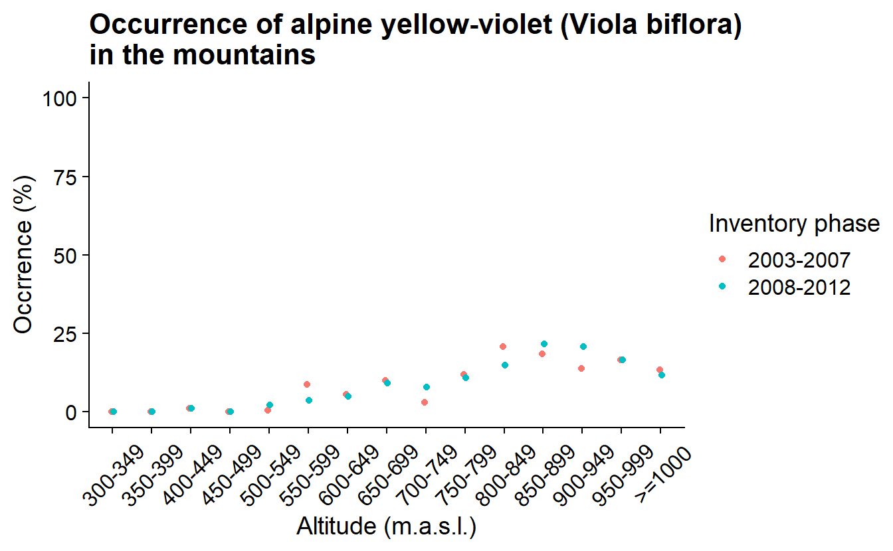
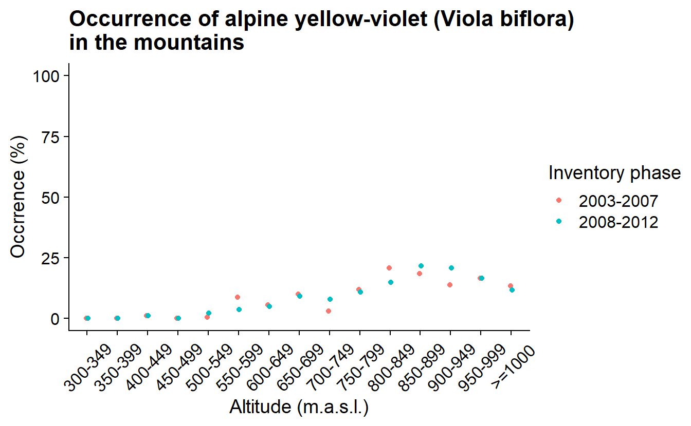

Chapter 8 Query data from NILS: blueberry and mountain violet occurrence in alpine region over time
library(jsonlite)
library(dplyr)
library(tidyr)
library(conflicted)
conflicts_prefer( dplyr::select, dplyr::filter)
library(glue)
library(ggplot2)
library(sf)
library(httr)8.1 Query data
urlApi <- 'https://landskap.slu.se/api/nils/api/'
endpoint <- 'SmaprovytaArter'
species <- 'Vaccinium myrtillus' #'Viola biflora'
species <- paste0('VetenskapligtNamn=', URLencode(species, reserved = TRUE))
years <- paste0('Ar=',c(2003:2012), collapse = '&')
region <- 'BioGeoRegion=Alpin'
pyUrl <- url(glue('{urlApi}{endpoint}?{species}&{years}&{region}'))
pyGet <- fromJSON(pyUrl)
py <- pyGet$data
pyUrl <- url(glue('{urlApi}{endpoint}?{years}&{region}'))
pyGet <- fromJSON(pyUrl)
py <- pyGet$data |>
mutate(uuid = glue('{rutaNummer}-{provytaNummer}')) |>
mutate_at(vars(uuid, vetenskapligtNamn), list(factor))
pySpp <- py |>
group_by(uuid, ar) |>
reframe(coordNS = unique(koordNS),
coordEW = unique(koordEW),
presBB = ifelse("Vaccinium myrtillus" %in% vetenskapligtNamn, 1, 0),
presAV = ifelse("Viola biflora" %in% vetenskapligtNamn, 1, 0)) |>
as.data.frame()### Altitud ###
pySf <- py |>
group_by(uuid) |>
reframe(coordNS = unique(koordNS),
coordEW = unique(koordEW)) |>
rowwise() |>
mutate(geom = st_sfc(list(st_point(c(coordEW, coordNS))),
crs = st_crs(3006))) |>
st_as_sf() |>
st_transform(st_crs(4326))
pySf$elevation <- NA
locations <- st_coordinates(pySf) |>
as.data.frame() |>
rename("latitude" = Y,
"longitude" = X)
nLocations <- nrow(locations)
queryLimit <- 100
lChunks <- split(seq(nLocations), ceiling(seq(nLocations)/queryLimit))
for (l in seq(length(lChunks))) {
loc <- locations[lChunks[[l]],] |>
mutate("xy" = glue("{round(latitude,5)},{round(longitude,5)}"))
loc <- paste0(loc$xy, collapse = "|")
elevGet <- url(glue("https://api.opentopodata.org/v1/eudem25m?locations={loc}"))
elevation <- fromJSON(elevGet)
message(elevation$status)
elevation <- elevation$results
print(range(elevation$elevation))
pySf$elevation[lChunks[[l]]] <- elevation$elevation
print(l)
}
#> [1] 653 981
#> [1] 1
#> [1] 487 1198
#> [1] 2
#> [1] 435 1016
#> [1] 3
#> [1] 437 973
#> [1] 4
#> [1] 470 1029
#> [1] 5
#> [1] 508 1101
#> [1] 6
#> [1] 471 1130
#> [1] 7
#> [1] 471 1390
#> [1] 8
#> [1] 405 1704
#> [1] 9
#> [1] 488 1409
#> [1] 10
#> [1] 432 1554
#> [1] 11
#> [1] 448 2015
#> [1] 12
#> [1] 376 1436
#> [1] 13
#> [1] 337 1282
#> [1] 14
#> [1] 519 820
#> [1] 15pySf
#> Simple feature collection with 1450 features and 4 fields
#> Geometry type: POINT
#> Dimension: XY
#> Bounding box: xmin: 12.1 ymin: 61.6 xmax: 22.2 ymax: 69
#> Geodetic CRS: WGS 84
#> # A tibble: 1,450 × 5
#> # Rowwise:
#> uuid coordNS coordEW geom elevation
#> * <fct> <dbl> <dbl> <POINT [°]> <dbl>
#> 1 326-1 6832355. 380670. (12.8 61.6) 840.
#> 2 326-10 6832364. 381420. (12.8 61.6) 786.
#> 3 326-11 6832361. 381170. (12.8 61.6) 793.
#> 4 326-12 6832358. 380920. (12.8 61.6) 817.
#> 5 326-2 6832605. 380667. (12.8 61.6) 808.
#> 6 326-3 6832854. 380664. (12.7 61.6) 794.
#> # ℹ 1,444 more rows
pySf$elevationBin <- cut(pySf$elevation, breaks = c(seq(300,1000, 50),Inf),
include.lowest = TRUE, right = FALSE)
pySpp$yearBin <- ifelse(as.numeric(as.character(pySpp$ar)) > 2007, "2008-2012", "2003-2007")
pySum <- pySpp |>
left_join(st_drop_geometry(pySf)) |>
group_by(yearBin, elevationBin) |>
reframe(count = n(),
sumPresBB = sum(presBB),
sumPresAV = sum(presAV)) |>
mutate(occBB = sumPresBB/count*100,
occAV = sumPresAV/count*100)elevBinLabel <- c("300-349","350-399","400-449","450-499","500-549","550-599",
"600-649","650-699","700-749","750-799","800-849","850-899",
"900-949","950-999",">=1000")
#### Vaccinium myrtillus
ggplot(pySum, aes(x = elevationBin, y = occBB, color = yearBin)) +
geom_point(position = position_dodge(0.1)) +
labs(title = 'Occurrence of blueberry (Vaccinium myrtillus) in the mountains',
y = "Occrrence (%)", x = "Altitude (m.a.s.l.)", color = "Inventory lap") +
ylim(0, 100) +
scale_x_discrete(labels = elevBinLabel) +
theme(axis.text.x = element_text(angle = 45, vjust = 0.5))
#### Viola biflora
ggplot(pySum, aes(x = elevationBin, y = occAV, color = yearBin)) +
geom_point(position = position_dodge(0.1)) +
labs(title = 'Occurrence of alpine yellow-violet (Viola biflora) in the mountains',
y = "Occrrence (%)", x = "Altitude (m.a.s.l.)", color = "Inventory lap") +
ylim(0, 100) +
scale_x_discrete(labels = elevBinLabel) +
theme(axis.text.x = element_text(angle = 45, vjust = 0.5), title = ggtext::element_markdown()) 
